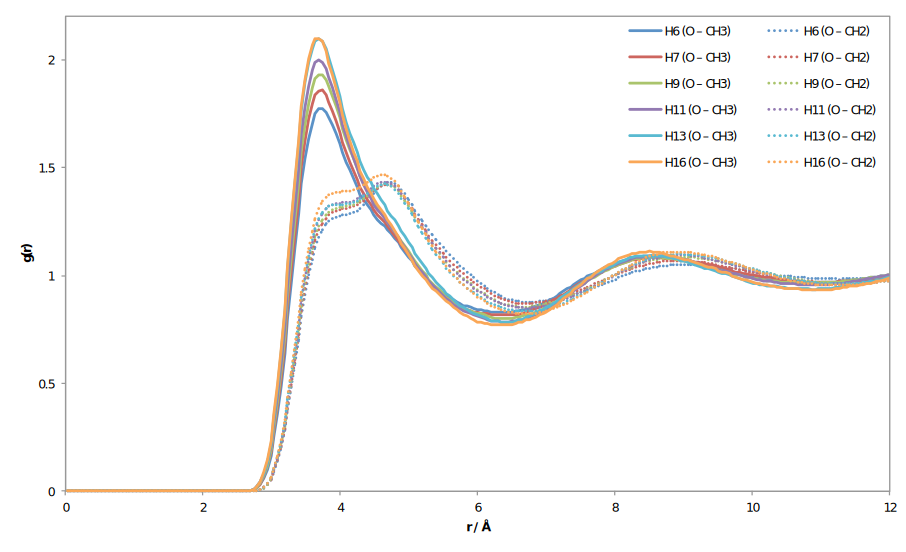
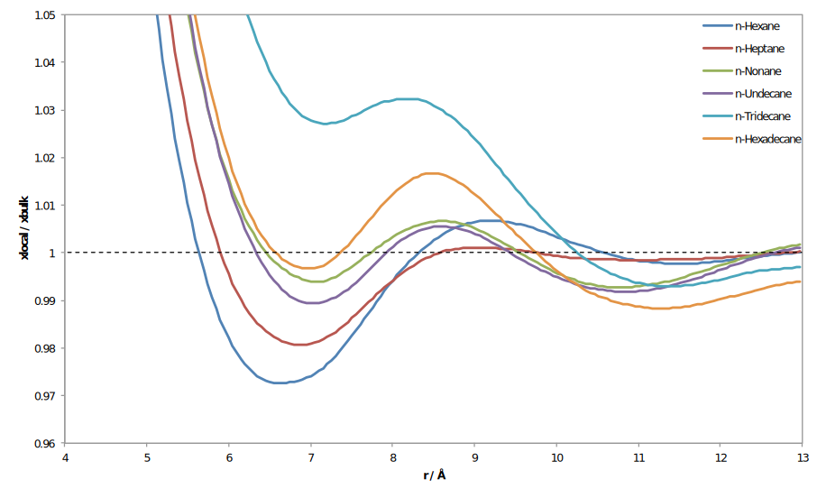

Master's Theses Defense
Candidate: Pedro José do Vale Duarte
Water + hydrocarbons mixtures and the oil extraction industry. A computer simulation study.
Examination Committee
Chairperson: Doctor Sebastião Manuel Tavares Silva Alves
Supervisor: Doctor Eduardo Jorge Morilla Filipe
Members of the Committee: Doctor Luís Filipe Guerreiro Martins
See this presentation on your device: http://xipasduarte.github.io/h2o-solute
Water + Hydrocarbon Systems
- Non-ideal with vast ranges of immiscibility.
- Two phases (and an interface).
Water Rich Phase
- Great importance for environmental and biological sciences.
- The solvation process is entropically governed.
Hydrocarbon Rich Phase

- Scattered data on the literature for the solubility values.
- Water loses its hydrogen bonding ability.
This is the work's focus, using MD simulations.
Simulations
- Fully MD atomistic simulations.
- Six n-Alkanes: H6, H7, H9, H11, H13 and H16
- Two temperatures: 298.15 K and 0.538 (Tr)
| Solvent | ρ / kg.m-3 | ρr / kg.m-3 | σ / % | σr / % |
|---|---|---|---|---|
| n-Hexane | 645.9 | 673.7 | -1.37 | -0.50 |
| n-Heptane | 673.6 | 678.5 | -0.87 | -1.05 |
| n-Nonane | 707.6 | 687.3 | -1.44 | -1.35 |
| n-Undecane | 731.4 | 690.8 | -1.16 | -1.65 |
| n-Tridecane | 750.1 | 692.8 | -0.78 | -1.78 |
| n-Hexadecane | 769.0 | 693.1 | -0.13 | -1.95 |
Structure
RDFs: Water-CT and Water-CS
Ratios: XCH3local/XCH3bulk
Ratios for CT RDFs